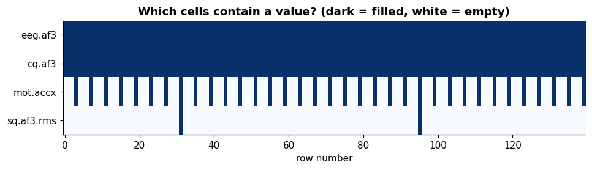

The dataset: every variable explained#
Learning objectives
- Load the CSV with pandas and describe its structure (rows, columns, data types, memory).
- Understand that the file mixes three data streams recorded at three different rates (128 Hz, 32 Hz and 2 Hz) in one table, and what the empty cells mean.
- Define each of the 76 variables: meaning, unit, rate and observed range in this recording.
- Distinguish signals (EEG, motion) from metadata (time stamps, counters) and derived quality indicators (
cq,sq).
Load the file#
All lab code runs in a Python environment with numpy, pandas, scipy and matplotlib (install with pip install numpy pandas scipy matplotlib). Place the CSV next to your notebook, or change the path in CSV. The file is about 100 MB, so loading takes a few seconds.
import numpy as np
import pandas as pd
import matplotlib.pyplot as plt
from scipy import signal, stats
# A clean, consistent plotting style for the whole lab
plt.rcParams.update({"figure.figsize": (10, 3.2), "axes.grid": True, "grid.alpha": .25,
"axes.spines.top": False, "axes.spines.right": False,
"font.size": 10, "axes.titleweight": "bold", "lines.linewidth": 1.0})
CSV = "SE_EPOCX_dataset.csv" # <- path to the recording
df = pd.read_csv(CSV)
print("shape (rows, columns):", df.shape)
print(f"memory in RAM: {df.memory_usage().sum() / 1e6:.0f} MB")
print("data types:", df.dtypes.value_counts().to_dict())
shape (rows, columns): (199705, 76)
memory in RAM: 121 MB
data types: {dtype('float64'): 75, dtype('int64'): 1}The table has 199,705 rows and 76 columns. Each row is one time instant of the EEG stream. Let us look at the first rows. We display only the first 10 columns, because the full table is far too wide to read.
df.iloc[:5, :10]
| index | timestamp | latency__desc | originaltimestamp | eeg.counter | eeg.interpolated | eeg.af3 | eeg.f7 | eeg.f3 | eeg.fc5 | |
|---|---|---|---|---|---|---|---|---|---|---|
| 0 | 14 | 1709557761.058814 | 0 | 1709557761.065051 | 17 | 0 | 248.5 | 329.9 | 256.9 | 317.1 |
| 1 | 15 | 1709557761.066623 | 0.007809 | 1709557761.072859 | 18 | 0 | 254.6 | 327.2 | 270.4 | 324.4 |
| 2 | 16 | 1709557761.074431 | 0.01562 | 1709557761.080567 | 19 | 0 | 263.6 | 324.4 | 284.6 | 333.8 |
| 3 | 17 | 1709557761.082239 | 0.02342 | 1709557761.088376 | 20 | 0 | 258.4 | 324.9 | 274.5 | 329.6 |
| 4 | 18 | 1709557761.090047 | 0.03123 | 1709557761.096184 | 21 | 0 | 248.6 | 324.6 | 263.5 | 321.1 |
Column names follow a dotted convention: a prefix says which stream the variable belongs to. The next cell counts the variables per prefix.
prefix = pd.Series(df.columns).str.split(".").str[0]
prefix = prefix.where(prefix.isin(["eeg", "cq", "mot", "sq"]), "bookkeeping")
print(prefix.value_counts().to_string())
sq 29 eeg 18 cq 15 mot 10 bookkeeping 4
So the 76 columns split into 4 time-related bookkeeping variables, 18 eeg.* variables (14 of which are the actual EEG signals), 15 contact-quality variables cq.*, 10 motion variables mot.* and 29 sensor-quality variables sq.*.
Three clocks in one table#
A CSV is rectangular, but the headset does not produce every quantity at the same rate. EEG and contact quality arrive with every sample; the motion unit is slower; the sensor-quality summary is slower still. The export software simply writes the value on the row where it was produced and leaves other rows empty (NaN in pandas). Counting the non-empty cells shows the rate of each stream.
FS = 128 # nominal EEG sampling rate (Hz), verified in Section 3
streams = {"eeg.af3": "EEG", "cq.af3": "contact quality", "mot.accx": "motion",
"sq.af3.rms": "sensor quality"}
rate = pd.DataFrame({"stream": streams.values(),
"fraction of rows filled": [df[col].notna().mean() for col in streams]},
index=list(streams))
rate["rate (Hz)"] = rate["fraction of rows filled"] * FS
rate
| stream | fraction of rows filled | rate (Hz) | |
|---|---|---|---|
| eeg.af3 | EEG | 1 | 128 |
| cq.af3 | contact quality | 1 | 128 |
| mot.accx | motion | 0.25 | 32 |
| sq.af3.rms | sensor quality | 0.01562 | 2 |
EEG and cq are filled on 100% of rows (128 Hz). Motion is filled on one row out of 4, i.e. 32 Hz. Sensor quality is filled on one row out of 64, i.e. 2 Hz (one value every half second). The picture below shows the pattern for the first 140 rows.
cols = ["eeg.af3", "cq.af3", "mot.accx", "sq.af3.rms"]
mask = df.loc[:139, cols].notna().to_numpy().T # 4 streams x 140 rows
fig, ax = plt.subplots(figsize=(10, 2.2))
ax.imshow(mask, aspect="auto", cmap="Blues", interpolation="nearest")
ax.set_yticks(range(4)); ax.set_yticklabels(cols)
ax.set_xlabel("row number"); ax.set_title("Which cells contain a value? (dark = filled, white = empty)")
ax.grid(False)
plt.show()

Watch out
Never compute statistics on a column with empty cells without thinking about the rate. For example, averaging mot.accx over all rows silently ignores 75% of the rows (that is fine), but plotting it against the row index would stretch the time axis by 4. Always build the time axis from the columns' own non-empty rows, as we will do in Chapter 3.
Data dictionary#
The tables below describe all 76 variables. The columns observed range and filled rows are computed from this very recording, so you can compare the manufacturer's definition with what actually happened.
A. Bookkeeping and timing#
| Variable | Meaning | Unit | Observed range | Filled rows |
|---|---|---|---|---|
index | Row identifier written by the recording software; increases by exactly 1 on every row. It starts at 14, so the first 14 samples of the session were not exported. | count | 14 … 199,718 | 199,705 |
timestamp | Time of the sample as Unix time (seconds since 1 Jan 1970, UTC). This is the column we use to build the time axis. | s | 1709557761.06 … 1709559320.41 | 199,705 |
latency__desc | Elapsed time since the first sample. We verified numerically that it equals timestamp − timestamp[0], so it is a convenient ready-made relative clock. | s | 0.00 … 1559.35 | 199,705 |
originaltimestamp | A second time stamp of the same sample, attached closer to the device. It differs from timestamp by a few milliseconds that drift slowly during the recording (two clocks at slightly different speeds), see Section 3. | s | same epoch as timestamp | 199,705 |
eeg.counter | Sample counter inside a one-second cycle: 0, 1, …, 127, 0, 1, … It lets you detect lost samples (a jump larger than 1). | count | 0 … 127 | 199,705 |
eeg.interpolated | Flag set to 1 when a sample was reconstructed after a radio packet was lost. It is 0 on every row of this file: no samples were interpolated. | 0 / 1 | 0 … 0 | 199,705 |
B. The 14 EEG signals (128 Hz)#
These are the main signals of the lab. All are in microvolts, are centred near 0 (the device removes the DC offset) and have an observed range of several hundred µV, which already tells us that artifacts are present: genuine EEG rarely exceeds ±100 µV.
| Variable | Meaning | Unit | Observed range | Filled rows |
|---|---|---|---|---|
eeg.af3 | EEG voltage at AF3 (left anterior frontal). | µV | -491 … 664 | 199,705 |
eeg.f7 | EEG voltage at F7 (left lateral frontal). | µV | -394 … 461 | 199,705 |
eeg.f3 | EEG voltage at F3 (left frontal). | µV | -361 … 376 | 199,705 |
eeg.fc5 | EEG voltage at FC5 (left fronto-central). | µV | -324 … 411 | 199,705 |
eeg.t7 | EEG voltage at T7 (left temporal). | µV | -503 … 514 | 199,705 |
eeg.p7 | EEG voltage at P7 (left parietal (posterior temporal)). | µV | -1707 … 569 | 199,705 |
eeg.o1 | EEG voltage at O1 (left occipital). | µV | -656 … 574 | 199,705 |
eeg.o2 | EEG voltage at O2 (right occipital). | µV | -698 … 712 | 199,705 |
eeg.p8 | EEG voltage at P8 (right parietal (posterior temporal)). | µV | -807 … 620 | 199,705 |
eeg.t8 | EEG voltage at T8 (right temporal). | µV | -538 … 563 | 199,705 |
eeg.fc6 | EEG voltage at FC6 (right fronto-central). | µV | -681 … 537 | 199,705 |
eeg.f4 | EEG voltage at F4 (right frontal). | µV | -508 … 427 | 199,705 |
eeg.f8 | EEG voltage at F8 (right lateral frontal). | µV | -420 … 402 | 199,705 |
eeg.af4 | EEG voltage at AF4 (right anterior frontal). | µV | -659 … 502 | 199,705 |
C. Device status#
| Variable | Meaning | Unit | Observed range | Filled rows |
|---|---|---|---|---|
eeg.rawcq | A raw contact-quality stream (an electrode-impedance-related measurement). It is zero during the first 47 rows, then cycles through repeated groups of numbers: it is multiplexed over the sensors and is not a smooth signal. We will only inspect it and use the cleaner cq.* columns instead. | device units | 0 … 7718 | 199,705 |
eeg.battery | Battery level. It is constant 0 in this export: the field was not reported, so it carries no information. | – | 0 … 0 | 199,705 |
D. Contact quality cq.* (128 Hz)#
One integer grade per sensor from 0 to 4 describing how well the felt pad touches the scalp (per Emotiv's convention: 0 no signal, 1 very bad, 2 poor, 3 fair, 4 good). cq.overall is a composite percentage for the whole headset.
| Variable | Meaning | Unit | Observed range | Filled rows |
|---|---|---|---|---|
cq.{ch} (14 columns) | Contact quality of each electrode. 13 of the 14 are almost always 4; the exception is P7 (cq.p7), whose values spread from 0 to 4, so it is the weak contact of this session. | grade 0–4 | 0 … 4 | 199,705 |
cq.overall | Composite headset-level quality. In this file its steps follow the P7 grade closely (Chapter 4). | % | 50.0 … 100.0 | 199,705 |
E. Motion unit mot.* (32 Hz)#
An inertial measurement unit in the headset. These signals do not measure the brain but they are extremely useful to explain artifacts.
| Variable | Meaning | Unit | Observed range | Filled rows |
|---|---|---|---|---|
mot.q0 … mot.q3 | Orientation of the head expressed as a unit quaternion \((q_0,q_1,q_2,q_3)\), which avoids the singularities of Euler angles. Its norm is 1 (we check this in Chapter 4). | unitless | -1.80 … 0.91 | 49,926 |
mot.accx, accy, accz | 3-axis accelerometer. At rest the magnitude is about 1 (gravity), so the unit is g. The sensor saturates at ±4 g; in this recording the Z axis is stuck at the limit for a long stretch (Chapter 4). | g | -4.00 … 4.00 | 49,926 |
mot.magx, magy, magz | 3-axis magnetometer: the local magnetic field including Earth's. Useful for heading, sensitive to nearby metal and electronics. | µT | -30.5 … 33.2 | 49,926 |
F. Sensor quality sq.* (2 Hz)#
A second, signal-based quality indicator updated twice per second. Unlike cq, which looks at the electrode contact, sq judges what the signal itself looks like (Chapter 4 compares the two).
| Variable | Meaning | Unit | Observed range | Filled rows |
|---|---|---|---|---|
sq.overallsensorquality | Composite quality of the whole headset from the signal point of view. | 0–100 | 0 … 75 | 3,120 |
sq.{ch}.signalquality (14 columns) | Quality grade of each channel, based on the signal. | grade 0–4 | 0 … 4 | 3,120 |
sq.{ch}.rms (14 columns) | Root-mean-square amplitude of each channel over a recent window (we show it matches a trailing window of about 2 s). It measures signal power, in µV. | µV | 2 … 1585 | 3,120 |
Sanity check on scale#
A good habit: before any analysis, compare the numbers with physical expectations. The cell prints the standard deviation of each channel, together with the first and last percentiles.
eeg_cols = [f"eeg.{ch}" for ch in CH]
check = df[eeg_cols].describe(percentiles=[.01, .99]).T[["mean", "std", "min", "1%", "99%", "max"]]
check.index = CH
check.round(1)
| mean | std | min | 1% | 99% | max | |
|---|---|---|---|---|---|---|
| af3 | 0.1 | 54.1 | -491 | -151 | 169.5 | 664.1 |
| f7 | 0.1 | 52.5 | -394.2 | -169.7 | 154.7 | 461 |
| f3 | 0.1 | 40.1 | -361 | -118.1 | 119.6 | 375.5 |
| fc5 | 0.1 | 39.3 | -323.7 | -117.4 | 118.5 | 411.2 |
| t7 | 0.2 | 50.9 | -503.3 | -169 | 177.8 | 514 |
| p7 | -0.4 | 105 | -1707 | -334.5 | 310.6 | 568.7 |
| o1 | -0 | 77.9 | -656 | -261 | 228.9 | 574.4 |
| o2 | -0 | 97.2 | -697.6 | -353.9 | 292.7 | 711.7 |
| p8 | 0 | 100 | -806.5 | -335.3 | 310.7 | 619.8 |
| t8 | 0 | 57.6 | -537.7 | -177 | 192.1 | 562.9 |
| fc6 | 0.2 | 52.2 | -680.9 | -152.9 | 152.2 | 537.2 |
| f4 | 0.2 | 55.8 | -508.4 | -168.8 | 158.7 | 427.4 |
| f8 | 0.2 | 41.4 | -420.3 | -116.9 | 125.7 | 401.9 |
| af4 | 0.2 | 67.4 | -659.2 | -185.1 | 206.2 | 502.4 |
All means are close to 0 µV (the DC offset was removed by the hardware high-pass filter). The standard deviations are between about 39 and 105 µV, and the extremes (such as -1707 µV on P7) are far beyond physiological EEG. The 1% and 99% percentiles are much more reasonable, a first hint that the distributions have heavy tails caused by artifacts. Posterior channels (P7, P8, O1, O2) show the largest spread, and, as Chapter 4 will show, they also get some of the lowest sensor-quality grades.
Exercise: Build your own dictionary
Write a function stream_of(column) that returns "eeg", "cq", "mot", "sq" or "time" for any column name, then create a DataFrame with the rate in Hz of every column (rows filled ÷ total rows × 128). Check that the sum of rates of the sq columns equals 29 × 2 Hz.
Show solution
def stream_of(col):
p = col.split(".")[0]
return p if p in ("eeg", "cq", "mot", "sq") else "time"
rates = pd.DataFrame({"stream": [stream_of(c) for c in df.columns],
"rate_hz": (df.notna().mean() * 128).to_numpy()}, index=df.columns)
print(rates.groupby("stream").rate_hz.agg(["count", "mean"])) # sq rows: count 29, mean 2.0Self-check: Why do the mot.* columns contain 75% empty cells?